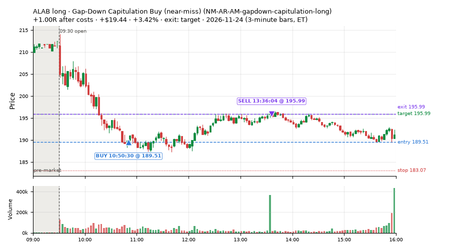
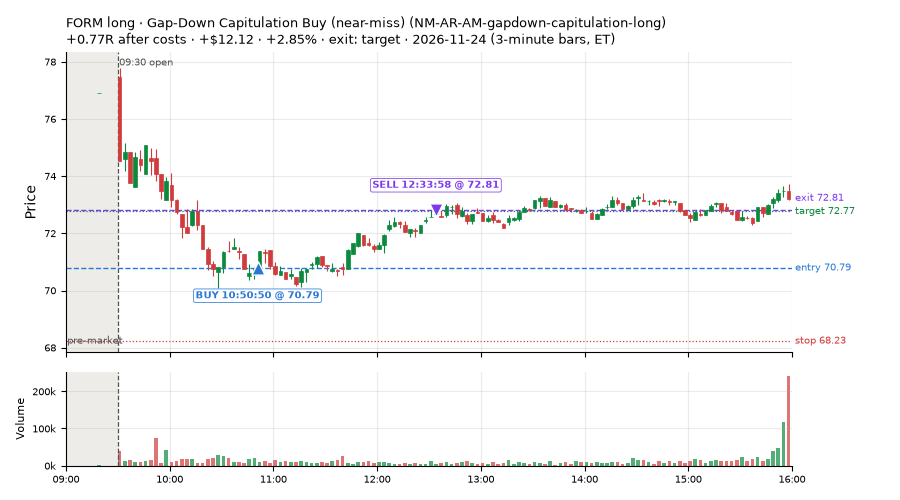
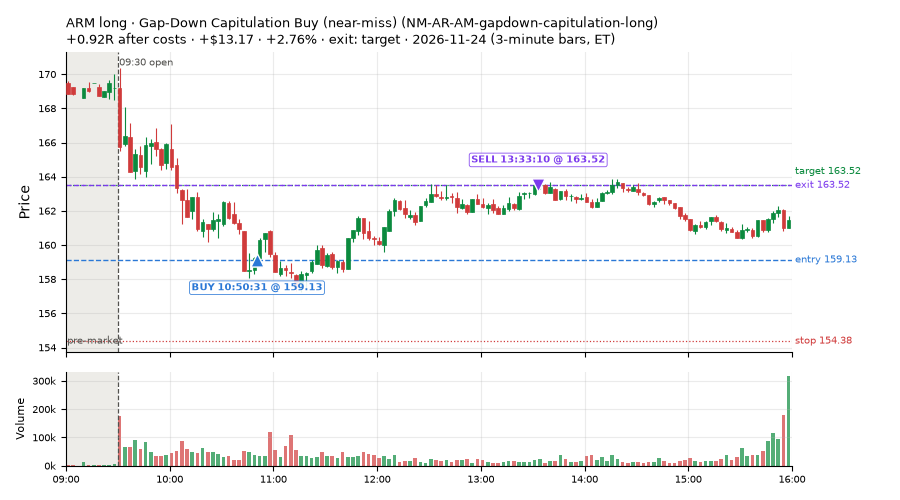
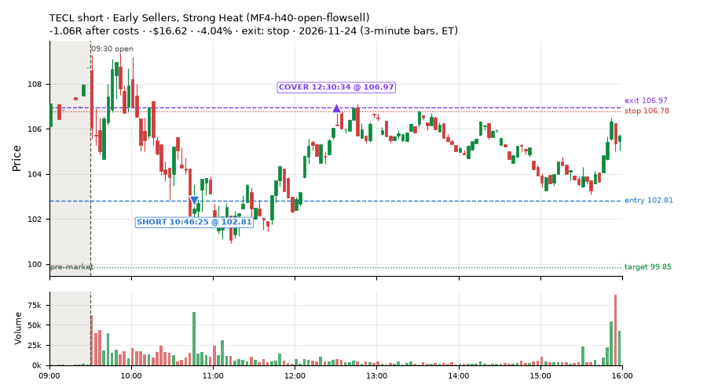
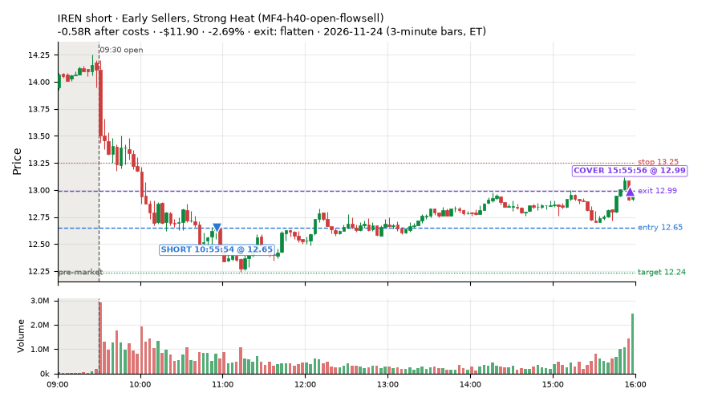
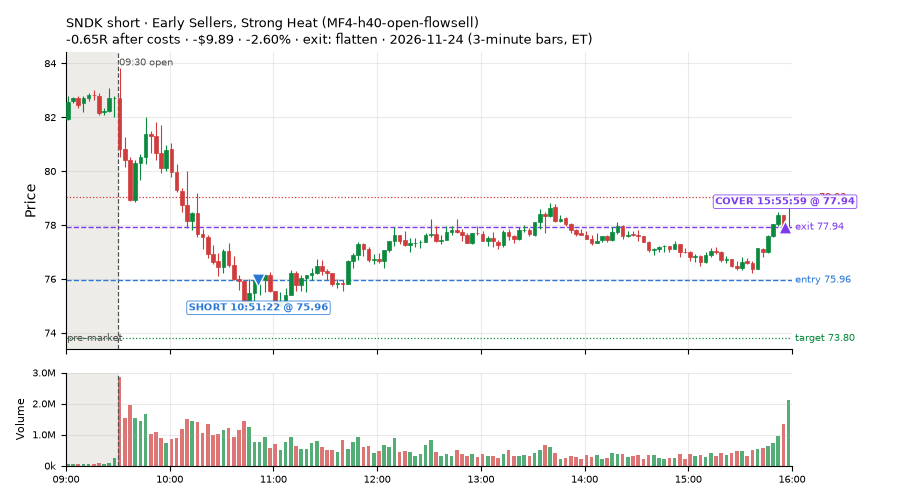
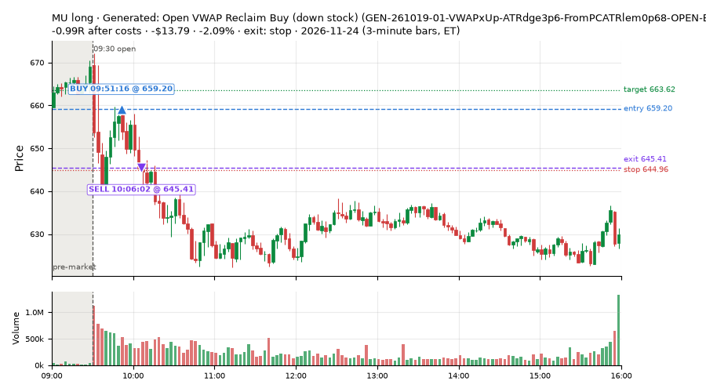

99 trades · win rate 54% · P/L $9.26
PROBATION: no live setup has passed both locked test periods. 10 owner-directed setups added 2026-10-08 (MarcoFlow top 5 + 5 new), untested live. RW6G1 (RW6 + VWAP band guard) added 2026-10-09, probation.

| Symbol | Setup | Side | In | Out | Entry | Exit | Exit reason | % gained | P/L |
|---|---|---|---|---|---|---|---|---|---|
| ALAB | Gap-Down Capitulation Buy (near-miss) (NM-AR-AM-gapdown-capitulation-long) | long | 10:50 | 13:36 | 189.51 | 195.99 | target | +3.42% | $19.44 |
| FORM | Gap-Down Capitulation Buy (near-miss) (NM-AR-AM-gapdown-capitulation-long) | long | 10:50 | 12:33 | 70.79 | 72.81 | target | +2.85% | $12.12 |
| ARM | Gap-Down Capitulation Buy (near-miss) (NM-AR-AM-gapdown-capitulation-long) | long | 10:50 | 13:33 | 159.13 | 163.52 | target | +2.76% | $13.17 |
| Symbol | Setup | Side | In | Out | Entry | Exit | Exit reason | % lost | P/L |
|---|---|---|---|---|---|---|---|---|---|
| TECL | MF4-h40-open-flowsell | short | 10:46 | 12:30 | 102.81 | 106.97 | stop | -4.04% | $-16.62 |
| LUNR | RW3-gapdn-rsi5pop-flowsell-short-FD-RQa-1230 | short | 11:41 | 14:20 | 8.95 | 9.30 | stop | -3.91% | $-17.15 |
| IREN | MF4-h40-open-flowsell | short | 10:55 | 15:55 | 12.65 | 12.99 | flatten | -2.69% | $-11.90 |
| SNDK | MF4-h40-open-flowsell | short | 10:51 | 15:55 | 75.96 | 77.94 | flatten | -2.60% | $-9.89 |
| MU | GEN-261019-01-VWAPxUp-ATRdge3p6-FromPCATRlem0p68-OPEN-BRvwgt0p7-t05s05-long | long | 09:51 | 10:06 | 659.20 | 645.41 | stop | -2.09% | $-13.79 |







Signal to fill: median 2s, 90th percentile 3s (99 trades). Bars close each minute; the order follows the bar close.
Best excursion (MFE): median 0.55R; worst (MAE) median 0.53R. 26% of trades never got +0.25R in our favour; 1 reached +1R and still closed at or below 0.
| Symbol | Setup | Best R | Worst R | Closed R |
|---|---|---|---|---|
| ARKG | GEN-261026-04-ORBfailDn-Ret15mlem0p55-SMA50dlem0p3-OPEN-BRvwgt0p5-holdtr-short | +0.81 | -1.09 | -1.12 |
| SPCX | MF2-open-rsimidhi-flowsell-FD-WB3 | +0.50 | -1.08 | -1.11 |
| SPCX | MF2-open-rsimidhi-flowsell-FD-WB3 | +0.44 | -1.02 | -1.10 |
| TECL | MF4-h40-open-flowsell | +0.47 | -1.01 | -1.06 |
| AVT | RW3-gapdn-rsi5pop-flowsell-short-FD-RQa-1230 | +0.40 | -1.03 | -1.12 |
| Entry time | Trades | Win | Avg R | P/L |
|---|---|---|---|---|
| 09:50-10:30 | 11 | 36% | -0.35 | $-30.62 |
| 10:30-11:30 | 35 | 66% | +0.26 | $69.56 |
| 11:30-13:00 | 42 | 50% | -0.15 | $-33.68 |
| 13:00-14:00 | 5 | 20% | -0.34 | $-8.61 |
| 14:00-16:00 | 6 | 67% | +0.17 | $12.61 |
| Setup | Trades | Win | Avg R after costs | Adj R (net of SPY) | Avg R ex-market (all sessions) | P/L |
|---|---|---|---|---|---|---|
| Generated: Open VWAP Reclaim Buy (down stock) (GEN-261019-01-VWAPxUp-ATRdge3p6-FromPCATRlem0p68-OPEN-BRvwgt0p7-t05s05-long) | 4.0 | 0% | -1.06 | -0.95 | -1.18 (beta -0.45, n 10) | $-39.28 |
| Generated: Open Tight-Range Sell-Off Buy (GEN-261020-08-FlowShiftlem0p41-Compress6le0p077-OPEN-QQQup-t05s05-long) | 1.0 | 0% | -0.14 | +0.13 | – | $-0.21 |
| Generated: Lunch Choppy RSI Turn Buy (GEN-261023-07-RSIslopege9p1-BarRngATRge0p087-VWAPcrossesge8-LUNCH-BRvwgt0p7-hold-long) | 17.0 | 47% | -0.11 | -0.02 | +0.35 (beta +3.29, n 53) | $-9.77 |
| Generated: Morning Upper-Wick Short (falling) (GEN-261026-01-UpWickge0p59-Since950ATRlem0p61-AM-BRopgt0p5-holdtr-short) | 3.0 | 100% | +1.08 | +1.55 | – | $13.59 |
| Generated: Open Failed-Breakdown Short (GEN-261026-04-ORBfailDn-Ret15mlem0p55-SMA50dlem0p3-OPEN-BRvwgt0p5-holdtr-short) | 4.0 | 50% | -0.22 | -0.20 | -0.14 (beta -0.15, n 15) | $-2.72 |
| Generated: Lunch Quiet Breakout Buy (SPY up) (GEN-261029-04-Ret15mge0p54-RVolDayle0p59-VWAPcrossesle1-LUNCH-SPYgt0p25-hold-long) | 4.0 | 75% | +0.41 | +0.35 | – | $9.29 |
| Early Sellers, Mid-High RSI (all day) — WB3: skip rising 20-SMA / gap-ups > 2% + RSI 55-62 + heat -40..-30 + ADV $150M (MF2-open-rsimidhi-flowsell-FD-WB3) | 8.0 | 12% | -0.68 | -0.54 | -0.68 (beta -1.49, n 36) | $-24.37 |
| Early Sellers, Strong Heat (MF4-h40-open-flowsell) owner-directed; holdouts once: Sep-Oct -0.117R n147, Apr-Jun -0.017R n735 | 11.0 | 45% | -0.02 | +0.06 | -0.09 (beta -0.41, n 67) | $-38.87 |
| Gap-Down Capitulation Buy (near-miss) (NM-AR-AM-gapdown-capitulation-long) | 18.0 | 89% | +0.60 | +0.28 | -0.12 (beta +0.76, n 111) | $128.14 |
| Early Sellers into a Pop (index down, no gap up) (near-miss) (NM-MF3-qqqdn-gapdn-FD) | 11.0 | 64% | -0.00 | -0.04 | -0.08 (beta -0.50, n 81) | $6.03 |
| Remedy-Q: Gap-Down Pop Fade, Heavy Selling, no entries after 12:30 (RW3-gapdn-rsi5pop-flowsell-short-FD-RQa-1230) | 10.0 | 30% | -0.55 | -0.45 | -0.14 (beta -0.80, n 13) | $-43.30 |
| Big Gainer Fade, VWAP Band Guard (all day) — WB3: from 11:00, stretched reclaim, liquid, no gap-up runners (RW6G1-ns2-up3-vwap2sd-short-FD-WB3) | 1.0 | 0% | -0.10 | -0.09 | – | $-0.26 |
| Afternoon Volatile Dip Buy (broad) (ULT-07-pm-volatile-dip-long) | 1.0 | 100% | +0.36 | +0.26 | +0.10 (beta +0.56, n 6) | $2.91 |
| RSI Collapse Buy, Down-Tape Guard (ULT-13-st7-sharp-long) | 4.0 | 50% | -0.06 | -0.06 | -0.07 (beta +0.77, n 13) | $-6.00 |
| Late-Day ETF Pop Fade (WB4 mirror) (ULT-HV1-etf-late-pop-fade-short-X) | 2.0 | 100% | +0.41 | +0.32 | +0.57 (beta +1.85, n 10) | $14.07 |
Market direction (SPY, beta 1) accounted for $17.29 of today's $9.26; the rest ($-8.03) came from the setups themselves. Avg R net of SPY: -0.02 (incl. a hedge leg's cost; report only).
20 setups live today. Today: 232 signals, 99 taken, 6 lost because another setup held the symbol (3%). Since 2026-10-12 (32 sessions): 13584 signals, 6786 taken, 827 lost to other setups (6%). Peak open positions today 58 of 800 slots. Earnings blackout removed 121 symbols before scanning.
Simulated playing time (not live): 6776 what-if trades of signals not taken, avg -0.07R, 57% winners; of them 827 lost to another setup (avg -0.17R).
Silent: LD4-st4-breadthup-t1s05-long, GEN-261028-01-MACDhge0p12-Since950ATRlem0p25-LATE-SPYgt0p5-holdtr-long, LD8-spy-dip030-breadthturn-spxl-holdtr-long, GEN-261027-10-FlowShiftlem1p2-MACDhge0p079-SMA20dge0p59-LUNCH-BRopgt0p65-holdtr-long, LD1-ns1-breadthup-t05s1-long, CWT04-backside-lh-a25-short, CWT04-backside-vwaptest-a25-short · Crowded out: NS3-failed-vwap-reclaim-short-FD · Starved: exhaustion_short-FD, MF5-flowsell-vwapup-rsi5hi, NS5-sma50-flush-oversold-long-FD, RW4-ns3-adv150-short-FD, MF2-open-rsimidhi-flowsell
| Prio | Setup | Today sig / taken | Sessions | Signals / taken / trades | Taken/day | Expected/day | Lost to other setups | Lost to (setup n) | Top skip reasons | SIMULATED: not-taken n / avg R / win | Verdict |
|---|---|---|---|---|---|---|---|---|---|---|---|
| 1 | Remedy-Q: Gap-Down Pop Fade, Heavy Selling, no entries after 12:30 RW3-gapdn-rsi5pop-flowsell-short-FD-RQa-1230 | 20 / 10 | 2 | 25 / 13 / 13 | 6.50 | – | 1 | NM-AR-AM-gapdown-capitulation-long 1 | spread / quote / size 6, other 3, not shortable / shorts off 2 | 12 / -0.33R / 42% | ok 32.5 entries/week |
| 2 | Gap-Down Recovery Fade — WB4: earlier cut-off, deeper gap, 75-min hold L3-gap-slope-fromopen-FD-WB4 | 30 / 0 | 6 | 293 / 31 / 31 | 5.17 | – | 7 | L3-gap-slope-fromopen-FD-WB4 7 | not shortable / shorts off 206, spread / quote / size 29, other 20 | 261 / -0.12R / 45% | ok 25.8 entries/week |
| 3 | Early Sellers, Mid-High RSI (all day) — WB3: skip rising 20-SMA / gap-ups > 2% + RSI 55-62 + heat -40..-30 + ADV $150M MF2-open-rsimidhi-flowsell-FD-WB3 | 27 / 8 | 6 | 81 / 36 / 36 | 6.00 | – | 2 | CWT14-failbrk-pdl-p05-R2A-long 2, CWT14-failbrk-pdl-p10-long 2 | other 21, spread / quote / size 17, symbol held by another setup 2 | 45 / -0.18R / 40% | ok 30.0 entries/week |
| 4 | Big Gainer Fade, VWAP Band Guard (all day) — WB3: from 11:00, stretched reclaim, liquid, no gap-up runners RW6G1-ns2-up3-vwap2sd-short-FD-WB3 | 1 / 1 | 6 | 13 / 3 / 3 | 0.50 | – | 0 | – | not shortable / shorts off 10 | 10 / +0.53R / 80% | slow 2.5 entries/week; ~24 weeks to 60 trades |
| 5 | Generated: Midday Spike Fade (SPY down) GEN-261028-07-Z12ge1p6-Eff6le0p034-MID-SPYltm0p25-hold-short | 0 / 0 | 7 | 30 / 18 / 18 | 2.57 | – | 0 | – | spread / quote / size 9, other 3 | 12 / +0.33R / 67% | slow 12.9 entries/week; ~5 weeks to 60 trades |
| 6 | Generated: Late Choppy Dip Buy (SPY down) GEN-261023-08-RSIslopelem5p5-VWAPcrossesge8-SMA50dlem1p7-LATE-SPYltm0p5-t1s1-long | 0 / 0 | 7 | 32 / 17 / 17 | 2.43 | – | 0 | – | spread / quote / size 7, other 6, price through stop/target 2 | 15 / -0.28R / 20% | slow 12.1 entries/week; ~5 weeks to 60 trades |
| 7 | Generated: PM Upper-Band Fade (weak mkt) GEN-261026-07-Flow3ge0p56-BBpctge0p98-ADX7le34-PM-BRvwlt0p3-holdtr-short | 0 / 0 | 7 | 297 / 163 / 163 | 23.29 | – | 8 | CWT14-failbrk-pdl-p05-R2A-long 4, CWT14-failbrk-pdl-p10-long 3, NM-AR-AM-gapdown-capitulation-long 1 | other 47, spread / quote / size 29, per-setup cap 26 | 134 / +0.23R / 62% | ok 116.4 entries/week |
| 8 | Generated: Open Failed-Breakdown Short GEN-261026-04-ORBfailDn-Ret15mlem0p55-SMA50dlem0p3-OPEN-BRvwgt0p5-holdtr-short | 8 / 4 | 7 | 29 / 15 / 15 | 2.14 | – | 0 | – | spread / quote / size 10, not shortable / shorts off 3, other 1 | 14 / -0.82R / 7% | slow 10.7 entries/week; ~6 weeks to 60 trades |
| 9 | Generated: Open Tight-Range Sell-Off Buy GEN-261020-08-FlowShiftlem0p41-Compress6le0p077-OPEN-QQQup-t05s05-long | 1 / 1 | 7 | 2 / 2 / 2 | 0.29 | – | 0 | – | – | 0 / – | slow 1.4 entries/week; ~42 weeks to 60 trades |
| 10 | Generated: Lunch Quiet Breakout Buy (SPY up) GEN-261029-04-Ret15mge0p54-RVolDayle0p59-VWAPcrossesle1-LUNCH-SPYgt0p25-hold-long | 10 / 4 | 7 | 10 / 4 / 4 | 0.57 | – | 0 | – | spread / quote / size 6 | 6 / +0.16R / 50% | slow 2.9 entries/week; ~21 weeks to 60 trades |
| 11 | Generated: Open VWAP Reclaim Buy (down stock) GEN-261019-01-VWAPxUp-ATRdge3p6-FromPCATRlem0p68-OPEN-BRvwgt0p7-t05s05-long | 5 / 4 | 7 | 29 / 10 / 10 | 1.43 | – | 0 | – | other 12, spread / quote / size 7 | 19 / -0.95R / 10% | slow 7.1 entries/week; ~8 weeks to 60 trades |
| 12 | Generated: Morning Upper-Wick Short (falling) GEN-261026-01-UpWickge0p59-Since950ATRlem0p61-AM-BRopgt0p5-holdtr-short | 8 / 3 | 7 | 8 / 3 / 3 | 0.43 | – | 1 | NM-AR-AM-gapdown-capitulation-long 1 | spread / quote / size 2, symbol held by another setup 1, not shortable / shorts off 1 | 5 / -0.53R / 40% | slow 2.1 entries/week; ~28 weeks to 60 trades |
| 13 | Generated: Lunch Choppy RSI Turn Buy GEN-261023-07-RSIslopege9p1-BarRngATRge0p087-VWAPcrossesge8-LUNCH-BRvwgt0p7-hold-long | 31 / 17 | 7 | 96 / 53 / 53 | 7.57 | – | 3 | NS3V1-am-widestop-short 2, exhaustion_short-FD 1 | other 25, spread / quote / size 15, symbol held by another setup 3 | 43 / -0.47R / 26% | ok 37.9 entries/week |
| 14 | Early Sellers into a Pop (index down, no gap up) (near-miss) NM-MF3-qqqdn-gapdn-FD | 25 / 11 | 25 | 159 / 81 / 81 | 3.24 | 4.90 | 7 | NM-AR-AM-gapdown-capitulation-long 7, CWT13-vwapstretch-z05-long 1 | spread / quote / size 38, not shortable / shorts off 18, other 15 | 78 / +0.14R / 55% | ok 16.2 entries/week |
| 15 | Early Sellers, Strong Heat MF4-h40-open-flowsell | 23 / 11 | 10 | 178 / 67 / 67 | 6.70 | 7.24 | 2 | CWT14-failbrk-pdl-p05-R2A-long 1, NM-AR-AM-gapdown-capitulation-long 1 | spread / quote / size 80, not shortable / shorts off 15, other 14 | 111 / +0.05R / 71% | ok 33.5 entries/week |
| 16 | Big Loser VWAP Reclaim Fade, Morning, Wide Stop NS3V1-am-widestop-short | 0 / 0 | 23 | 325 / 173 / 173 | 7.52 | 5.30 | 7 | NS3V1-am-widestop-short 7, NM-RWR3-ns3-qqqup-early-short 1, NM-RWN3-ns3-spyup-early-short 1 | spread / quote / size 97, not shortable / shorts off 45, symbol held by another setup 7 | 152 / +0.06R / 62% | ok 37.6 entries/week |
| 17 | Gap-Down Capitulation Buy (near-miss) NM-AR-AM-gapdown-capitulation-long | 32 / 18 | 27 | 178 / 111 / 111 | 4.11 | – | 5 | MF4-h40-open-flowsell 4, CWT14-failbrk-pdl-p05-R2A-short 1 | spread / quote / size 55, other 7, symbol held by another setup 5 | 67 / +0.00R / 51% | ok 20.6 entries/week |
| 18 | RSI Collapse Buy, Down-Tape Guard ULT-13-st7-sharp-long | 4 / 4 | 3 | 23 / 13 / 13 | 4.33 | – | 1 | GEN-261026-07-Flow3ge0p56-BBpctge0p98-ADX7le34-PM-BRvwlt0p3-holdtr-short 1 | spread / quote / size 9, symbol held by another setup 1 | 10 / -0.24R / 40% | ok 21.7 entries/week |
| 19 | Late-Day ETF Pop Fade (WB4 mirror) ULT-HV1-etf-late-pop-fade-short-X | 5 / 2 | 3 | 19 / 10 / 10 | 3.33 | – | 1 | GEN-261019-03-Ret15mATRlem0p12-FromOpenATRlem0p34-SMA20slopege0p29-PM-BRoplt0p5-t05s1-long 1 | not shortable / shorts off 8, symbol held by another setup 1 | 9 / -0.31R / 56% | ok 16.7 entries/week |
| 20 | Afternoon Volatile Dip Buy (broad) ULT-07-pm-volatile-dip-long | 2 / 1 | 3 | 7 / 6 / 6 | 2.00 | – | 0 | – | spread / quote / size 1 | 1 / -0.09R / 0% | slow 10.0 entries/week; ~6 weeks to 60 trades |
Every trade is attached as a CSV you can open and edit in Excel or Google Sheets. Live page: https://misiti15.github.io/MCF/live/